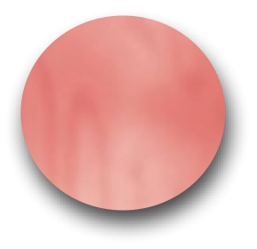

Welcome to the web supplement to Readings in
Database
Systems, 4th Edition.
This site is under construction.
|  | Lecture notes from Berkeley |
| List of papers appearing in this edition and previous editions | |
| Website for the 3rd edition |
| Pointers to other database information | |
| FAQ |
|
| Acknowledgments |

© 2005, Joseph
M. Hellerstein.